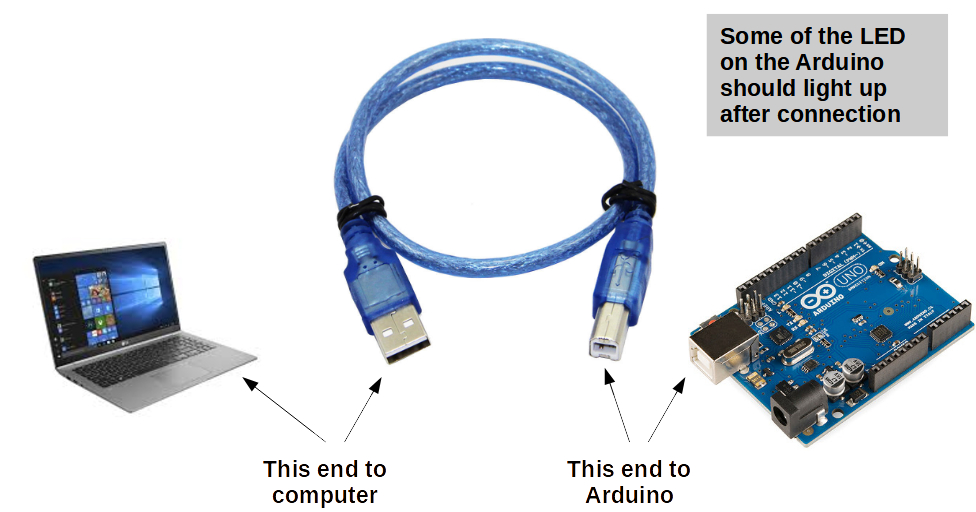
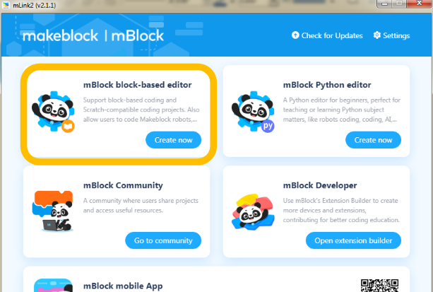
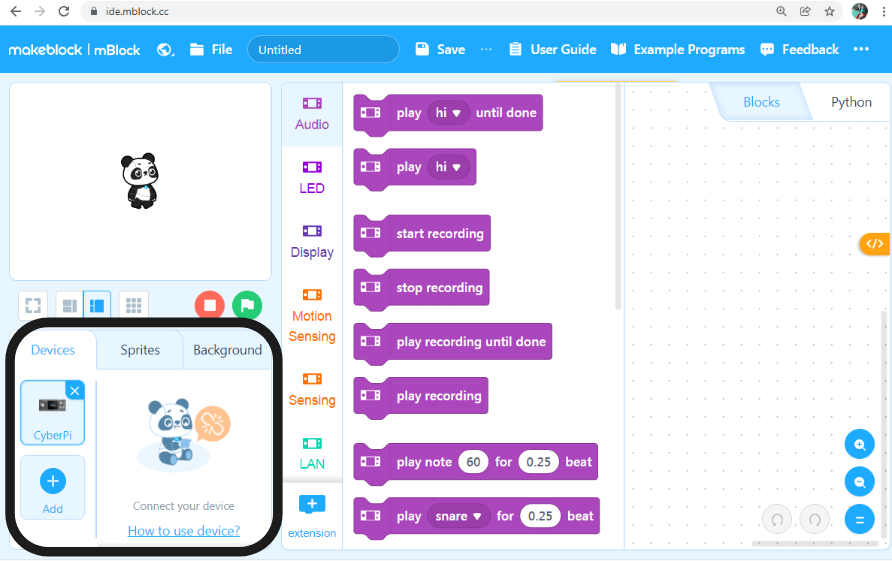
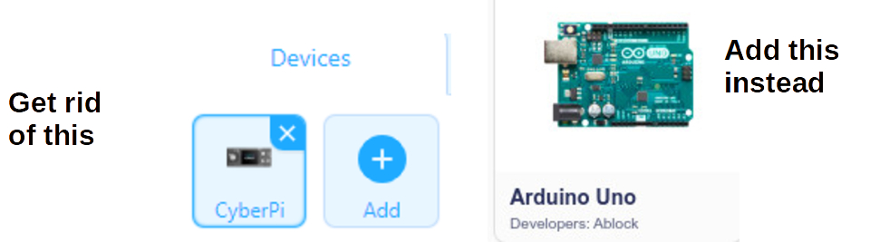
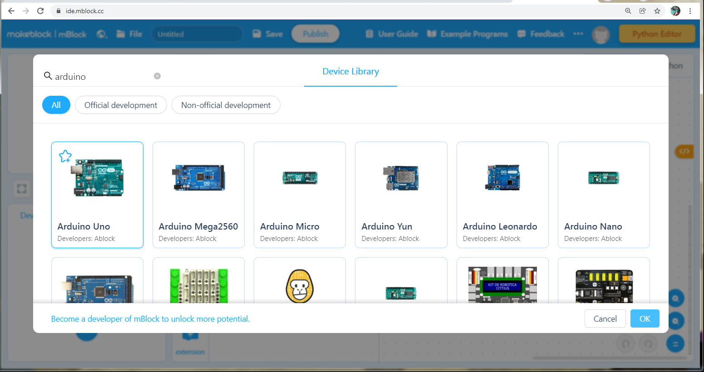
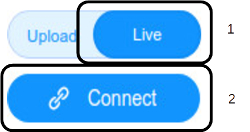
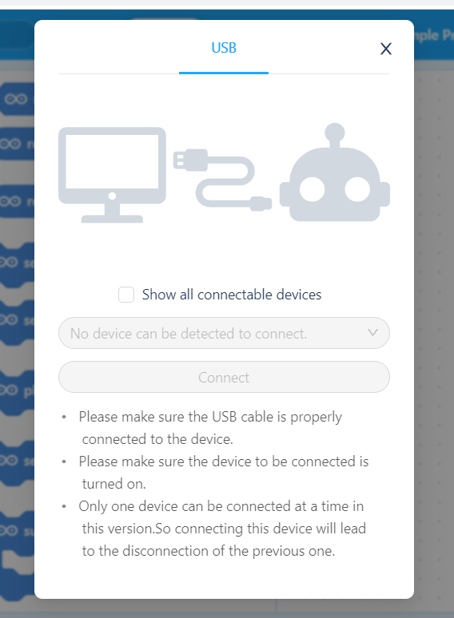
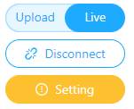

Basic Setup
The following are general steps you'll need to follow to connect your Arduino Uno and mBlock to create your working development environment.
Physical Connection
Start by connecting the Arduino Uno to your PC/Laptop using the USB Serial cable. The Arduino's power LED should light up, and you may see the LED labeled as "L" blink rapidly and possibly continue to stay on as well.

Using mBlock in the Browser (mLink)
If you need to use mBlock from a browser, you will need to run a piece of software in the background, which supports translating commands from the browser to the Serial connection.
This software is called mLink and you should find it and start it on your PC/Laptop. Its icon should look like this:
If your PC/Laptop doesn't have it installed, you can find it here.
But, if you are using the mBlock app on your PC/Laptop, you will not need the separate mLink software at all.
Start the mBlock IDE - http://ide.mblock.cc
From a modern browser (preferably Chrome), you can load the above URL{:target="_blank"}.
If you have mLink up, you can also click on the "Create now" button as shown below, but note that it will load the IDE on the default browser, which might not be Chrome or the one you'd prefer.
If you're using a local mBlock app, just start it up as any other.

Setup Arduino Uno as Device
You should see something like this:

Let's zoom in on the highlighted area and do some plumbing...
In the version of mBlock as-of writing, the default Device loaded in the IDE is CyberPi.
We want Arduino Uno, so let's remove(x) CyberPi, and Add(+) Arduino Uno instead.


Make sure you get Arduino Uno with Developers: Ablock
Connect to Arduino Uno
Now it's time to establish that Serial connection between mBlock and Arduino Uno.
NOTE: There's a difference between Upload and Live mode, which we will discuss later, but until further notice, make sure to use Live mode always.
Toggle the mode to Live, and press Connect.

You will see a connection dialog like this:

If you see a COM
If there are no COM ports listed, try checking the Show all connectable devices checkbox, and see if you get a COM port listed then. If so, click Connect.
If you're still not getting a COM port listed, make sure your Arduino is properly connected with the USB cable to your PC/Laptopo, disconnect the cable and connect it back, and try the above connection process again.
Setting / Firmware Update
You are almost done.
Once the Arduino Uno establishes a connection, the Connect button turns into a Disconnect button, and you should also see a new Setting button below that.
If this is the first time you are using the Arduino Uno in Live mode you will need to download some code into the Arduino to behave in this synchronous style.
You will know if you need to update the Arduino by looking at the Setting button.
If it is Yellow/Orange and shows a warning/exclamation sign, you need to update. Click the colored Setting button and follow the instructions.

Once done, click Connect to re-connect to the Arduino, and you should be all set (Setting should have a clear/white background).